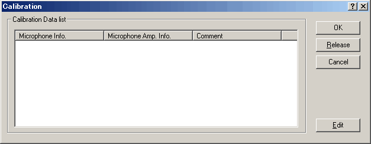
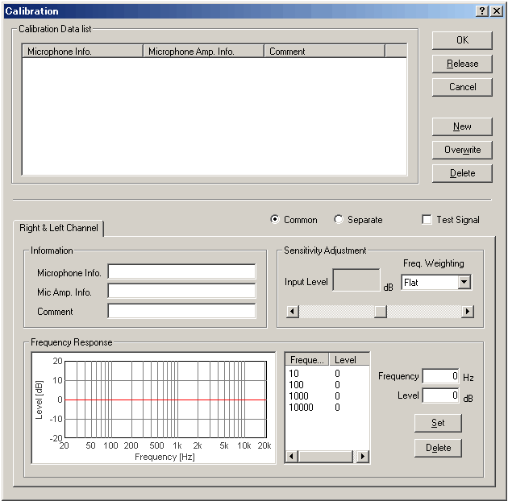

| 1) |
Connect the microphone and the loudspeaker to the soundcard. Confirm that the signal input/output is possible. |
| 2) |
Open the FFT analyzer and click the Calibration button. Calibration window opens. If you already have calibration data, select the data and click the OK button. If not, go to the next step.

|
| 3) |
Click the Edit button. Edit window opens.

|
| 4) |
A) Using the sound level meter (SLM)
- Place the SLM and the microphone closely to the sound source (loudspeaker), set the frequency weighting curve of the SLM as FLAT, and output the test signal (1kHz sine tone) by checking the "Test Signal" box.
- Set the volume of the input device (see the main window of Realtime Analyzer) so that the peak level monitor reaches around -15 and -10 dB.
- On the calibration window, set the frequency weighting curve as FLAT, and adjust the sensitivity scrollbar until the Input Level matches the reading of the SLM.
B) Using the acoustic calibrator
- Attach the calibrator to the microphone, and turn it on.
- Set the volume of the input device so that the peak level monitor on the RA's main window will be at between -15 and -10 dB.
- On the calibration window, set the frequency weighting curve as FLAT, and adjust the sensitivity scrollbar until the Input Level matches the reference sound pressure level of the calibrator (e.g. it is typically 94 dB or 114 dB at 1000 Hz).
C) Measuring sound by the sound level meter as a microphone
- The sound level meter itself can be used as a microphone. See Connect the sound level meter with PC for how to connect the sound level meter with PC and calibrate its sensitivity.
|
| 5) |
Enter the Microphone Info., Mic Amp. Info. (optional) and Comment (optional), and click the New button. It appears on the calibration data list. To use the stored calibration data, just select the microphone data from the list. |